Langkah Konfigurasi
Persiapan Awal
Sebelum memulai konfigurasi, pastikan alat dan bahan berikut sudah dipersiapkan :
- Server dengan sistem operasi linux debian
- Akses root atau user dengan privilege sudo
- Penyimpanan kosong minimal 3 GB

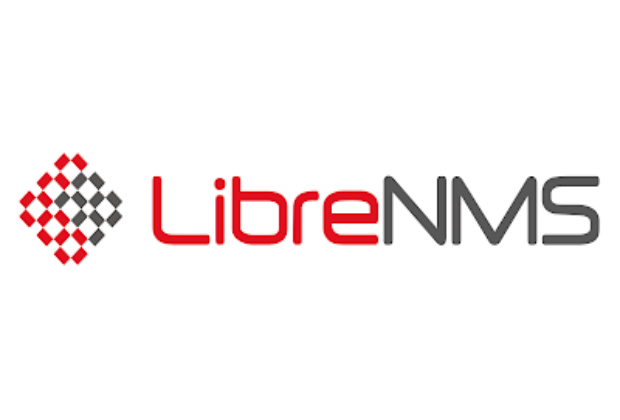
Update & Upgrade Sistem
Langkah pertama adalah update & upgrade sistem agar repository menjadi paling update :
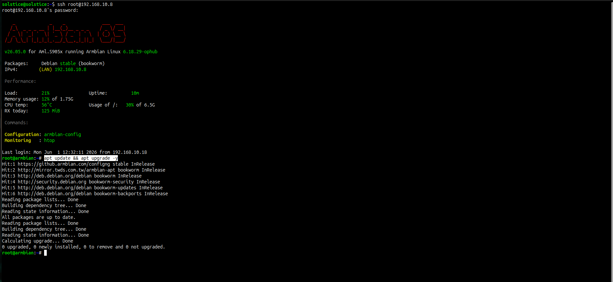
Commands :
Instal Paket Yang Diperlukan
Langkah selanjutnya adalah menginstal paket yang diperlukan untuk librenms :
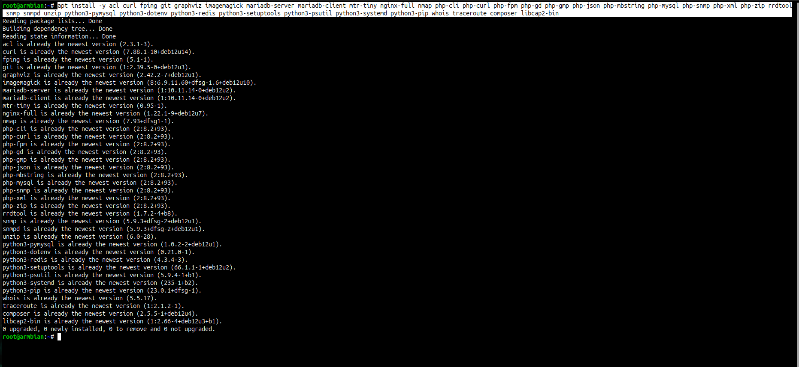
Commands :
Membuat User Sistem & Klon Source Code Dari GitHub
Langkah selanjutnya adalah membuat user sistem untuk librenms & klon source code dari github :
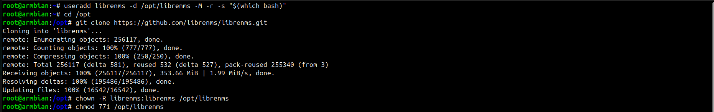
Commands :
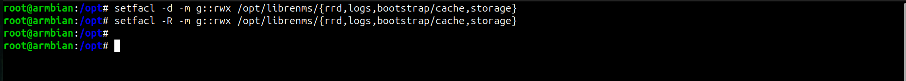
Commands :
Menginstal Dependensi PHP
Langkah selanjutnya adalah menginstal dependensi php dengan composer :
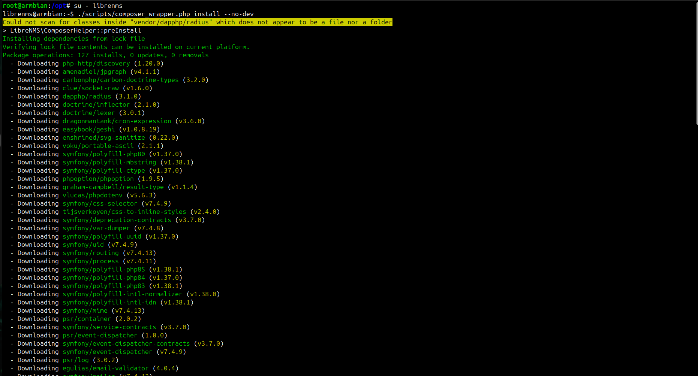
Commands :
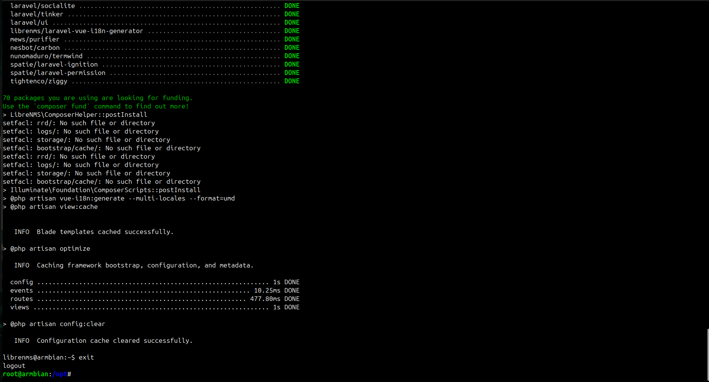
Commands :
Mengatur Zona Waktu Untuk PHP & Sistem
Langkah selanjutnya adalah Mengatur zona waktu untuk php dan sistem :
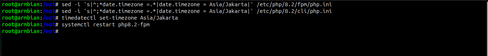
Commands :
Konfigurasi MariaDB
Langkah selanjutnya adalah konfigurasi mariadb :
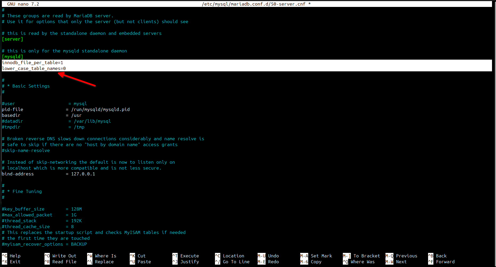
Commands :
# Tambahkan tepat dibawah mysqlinnodb_file_per_table=1lower_case_table_names=0
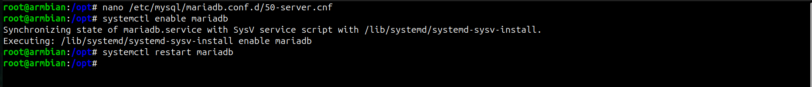
Commands :
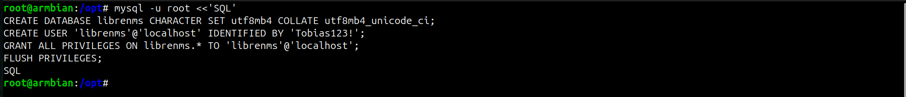
Commands :
# User & Password bisa di ganti sesuai kebutuhanmysql -u root <<'SQL'CREATE DATABASE librenms CHARACTER SET utf8mb4 COLLATE utf8mb4_unicode_ci;CREATE USER 'librenms'@'localhost' IDENTIFIED BY 'Tobias123!';GRANT ALL PRIVILEGES ON librenms.* TO 'librenms'@'localhost';FLUSH PRIVILEGES;SQL
Membuat Konfigurasi Pool PHP-FPM Terpisah
Langkah selanjutnya adalah membuat konfigurasi pool php-fpm terpisah untuk librenms :
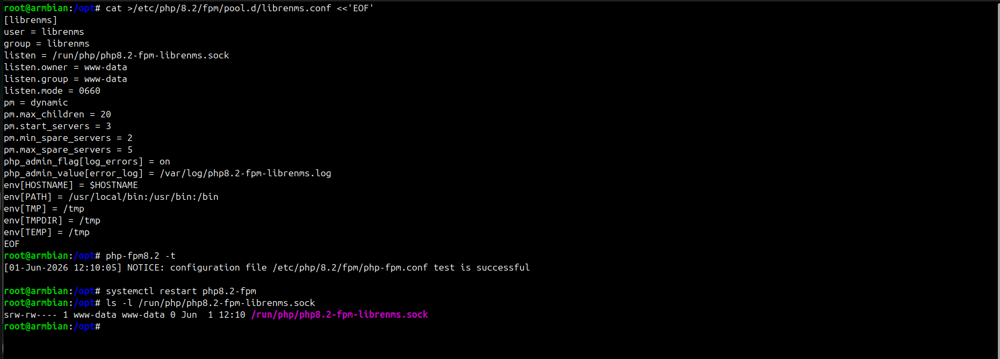
Commands :
cat >/etc/php/8.2/fpm/pool.d/librenms.conf <<'EOF'[librenms]user = librenmsgroup = librenmslisten = /run/php/php8.2-fpm-librenms.socklisten.owner = www-datalisten.group = www-datalisten.mode = 0660pm = dynamicpm.max_children = 20pm.start_servers = 3pm.min_spare_servers = 2pm.max_spare_servers = 5php_admin_flag[log_errors] = onphp_admin_value[error_log] = /var/log/php8.2-fpm-librenms.logenv[HOSTNAME] = $HOSTNAMEenv[PATH] = /usr/local/bin:/usr/bin:/binenv[TMP] = /tmpenv[TMPDIR] = /tmpenv[TEMP] = /tmpEOF
Konfigurasi Nginx
Langkah selanjutnya adalah membuat konfigurasi virtual host nginx untuk librenms. pada bagian /etc/nginx/conf.d/librenms.conf server name bisa di sesuaikan dengan yang dibutuhkan :
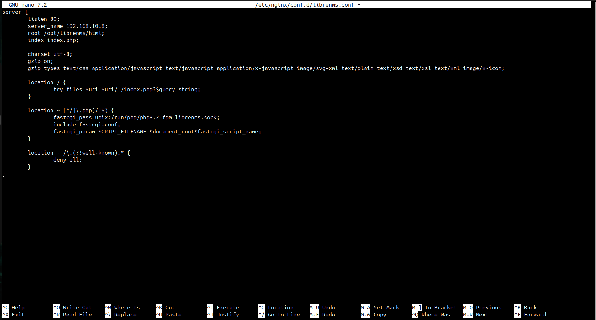
Commands :
server { listen 80; server_name 192.168.10.8; root /opt/librenms/html; index index.php; charset utf-8; gzip on; gzip_types text/css application/javascript text/javascript application/x-javascript image/svg+xml text/plain text/xsd text/xsl text/xml image/x-icon; location / { try_files $uri $uri/ /index.php?$query_string; } location ~ [^/]\.php(/|$) { fastcgi_pass unix:/run/php/php8.2-fpm-librenms.sock; include fastcgi.conf; fastcgi_param SCRIPT_FILENAME $document_root$fastcgi_script_name; } location ~ /\.(?!well-known).* { deny all; }}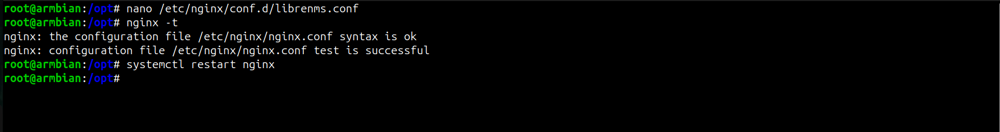
Commands :
Konfigurasi SNMP
Langkah selanjutnya adalah konfigurasi snmp yang digunakan oleh librenms untuk mengumpulkan data dari perangkat jaringan :
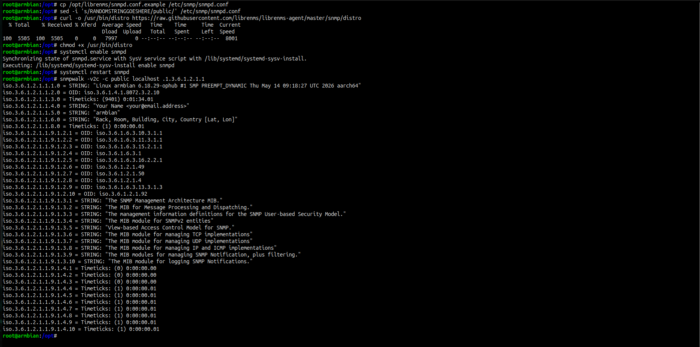
Commands :
Konfigurasi Akhir LibreNMS
Langkah selanjutnya adalah konfigurasi akhir librenms seperti setting command shortcuts, cron jobs, scheduler, dan fping permissions :
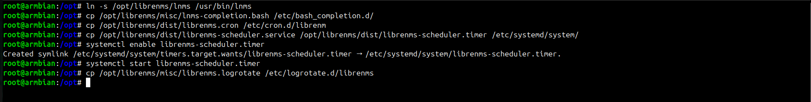
Commands :
Membuat User Dashboard LibreNMS
Langkah selanjutnya adalah membuat user librenms di dashboard librenms website dengan menggunakan ip server http://ip-server pada browser lalu ikuti petunjuk berikut ini :
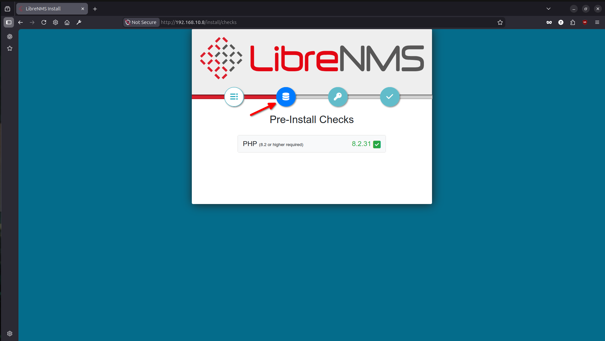
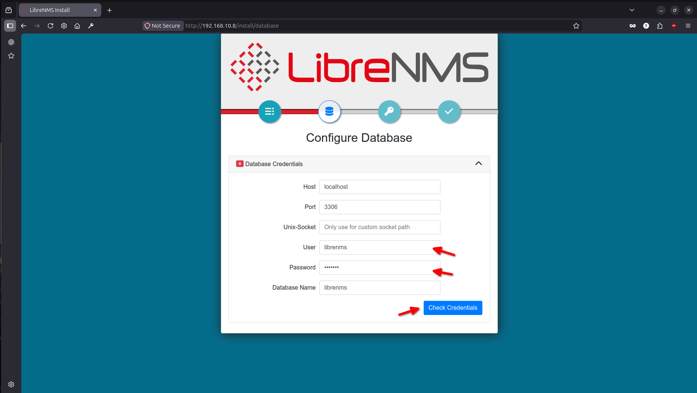
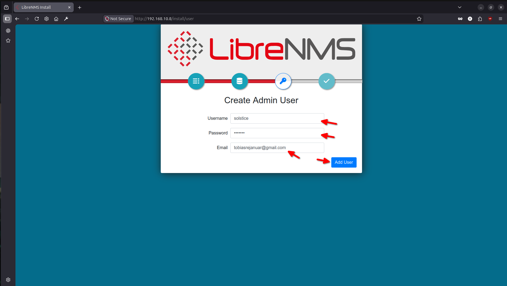
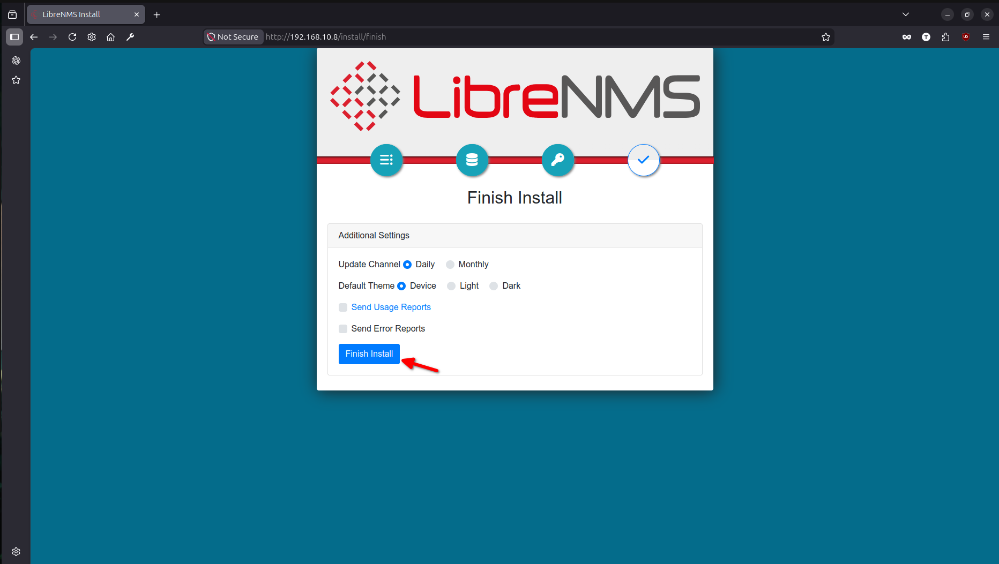
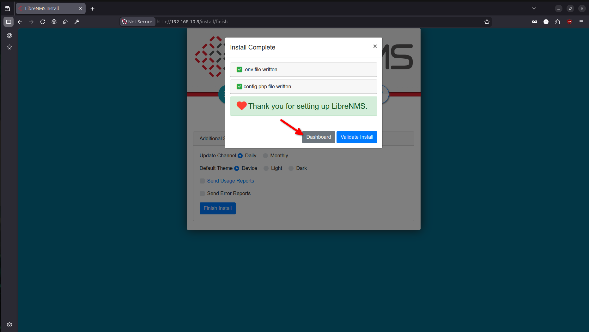
Menambahkan Device Ke LibreNMS
Langkah selanjutnya adalah menambahkan device ke librenms. jika menambahkan mikrotik atau device lainnya, pastikan sudah disetting snmpnya :
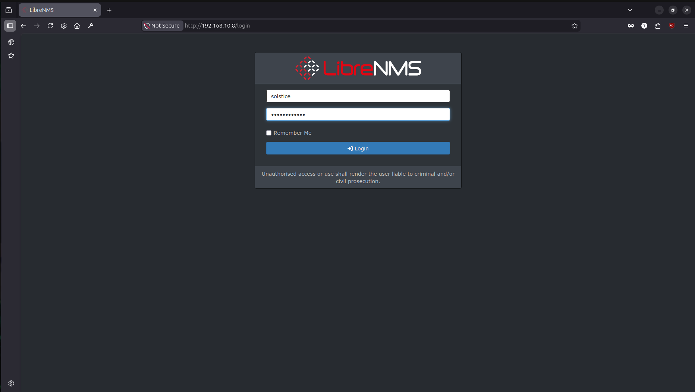
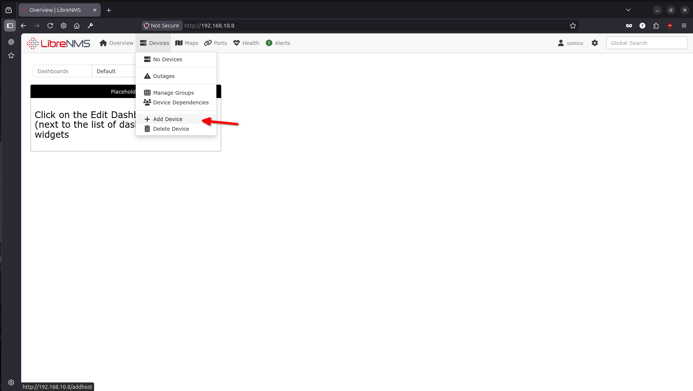
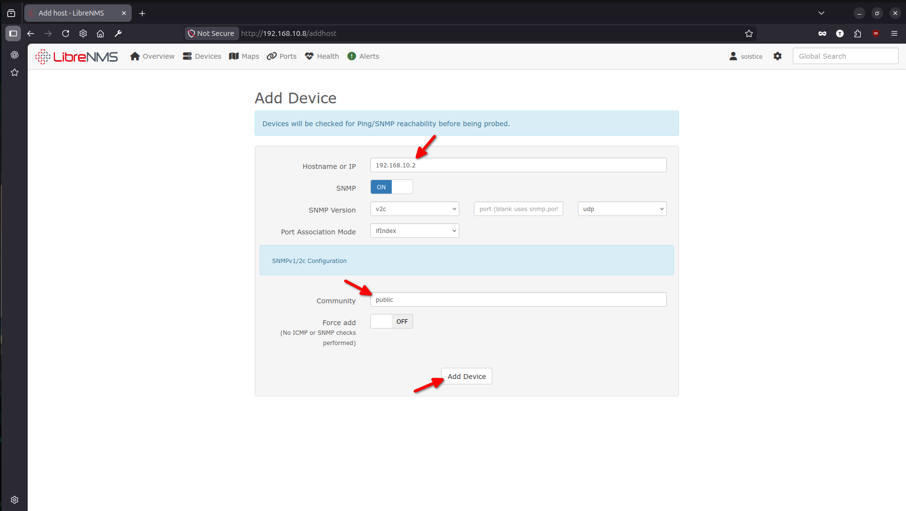
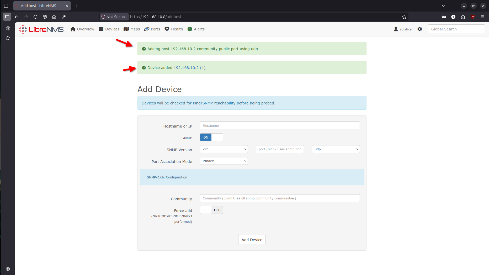
Pengujian
Langkah selanjutnya adalah menguji apakah monitoring librenms sudah berjalan dengan optimal. karena sudah ada 2 device yang ditambahkan, maka bisa dipilih salah satu device dengan klik ip device untuk melihat lebih lengkap data dari device tersebut :
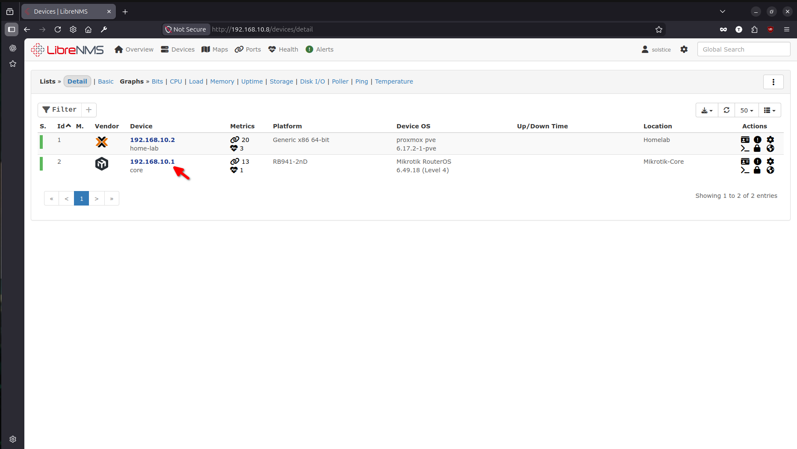
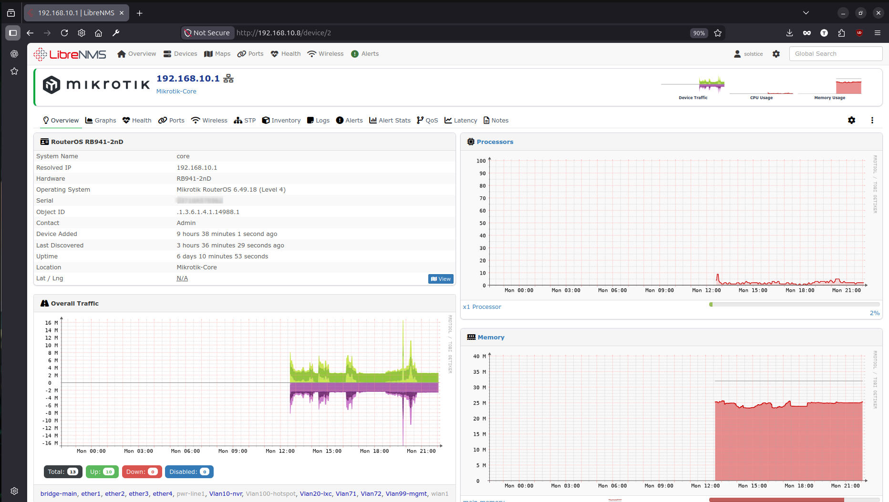
Kesimpulan
Berdasarkan konfigurasi yang telah dilakukan, LibreNMS berhasil berjalan pada Debian 12 dan mampu melakukan pemantauan perangkat jaringan serta server secara terpusat dan real-time. Implementasi ini memudahkan administrator dalam memonitor kondisi infrastruktur, mendeteksi gangguan, dan mengelola sumber daya jaringan secara lebih efektif dan efisien.